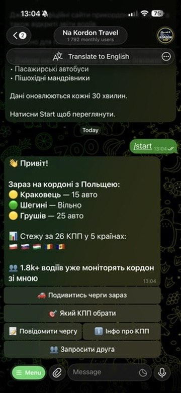
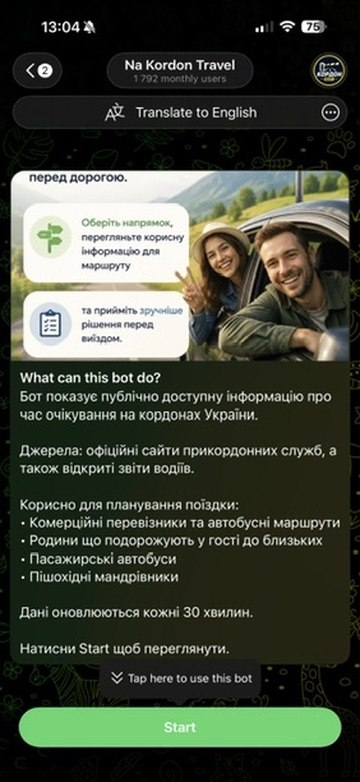
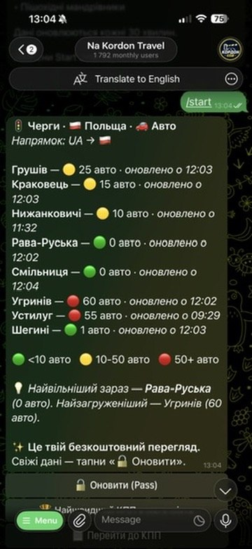
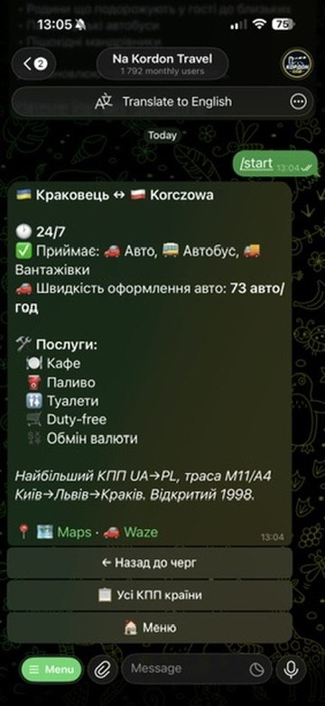

Готовий канал продажу «Зеленої карти» та страхування подорожей. Найточніший таргетинг: 1.9k активних водіїв, які вже сьогодні планують перетин кордону, +20–30 нових юзерів щодня — з нульовими витратами на маркетинг.

Kordon Bot — це не інформація. Це момент, коли водій знає, що поїде, і готовий купити страховку. Ви продаєте рішення, коли клієнт максимально сприйнятливий.
Нижче — лише кілька з ключових екранів. Під капотом набагато більше: сповіщення про зміну черги, платежі, реферальна програма, зворотній зв'язок, адмін-панель, аналітика.

Вибір напрямку, чітке пояснення цінності. Юзер розуміє продукт за 5 секунд.
Стан черг на всіх активних КПП з Польщею, Румунією, Угорщиною, Словаччиною та Молдовою.

ШІ рекомендує найменш завантажений пункт. Статистика по авто / автобусам, оновлення кожні 30 хв.

Час роботи, типи ТЗ, доступні послуги: кафе, паливо, туалети, duty-free, обмін.
8.2 млн транспортних засобів на рік — це 8.2 млн обов'язкових «Зелених карт». Держприкордонслужба, 2025. Ринок росте +5–7% YoY.
Це приклад, як може виглядати економіка. Скажімо, після маркетингової кампанії ваша активна база — 50 000 водіїв. Ось скільки маржі приносить «Зелена карта» як основний продукт.
| Активна база (після маркетинг-кампанії) | 50 000 юзерів |
| Конверсія у «Зелену карту» | 3% |
| Середня вартість «Зеленої карти» | $25 |
| Маржа страховика | 30% |
| Маржа з бази щомісяця | $11 250 |
Юзер повертається у бот перед кожною поїздкою — це кілька разів на рік. Кожне повернення — шанс продати страховку подорожі, розширену «Зелену карту» або дорожній assistance. Маржа з базового продукту — лише стартова точка.
Активний трафік вже є та стабільно зростає. Не будуйте з нуля — купіть готовий актив і почніть монетизувати з першого дня.
Юзер сам приходить дізнатись про черги. Це людина, яка вже готується до поїздки. Intent на рівні пошуку.
Юзер відкриває бот перед кожною поїздкою — кілька разів на рік. Крос-продажі медичного страхування, дорожнього assistance, продовжень «Зеленої карти».
Ваша страхова — перше, що бачить водій, коли думає про перетин кордону. Топ-оф-майнд у категорії з високою частотою покупки.
Аналітика по маршрутах, частоті поїздок, географії. Сировина для продуктових рішень та кампаній повторного залучення.
База 1.9k побудована з нуля без маркетингового бюджету і зростає самостійно, автоматично — за рахунок пошуку та рекомендацій. Ви успадковуєте готовий механізм органічного росту.
Продукт побудований максимально зручно. Ваш маркетолог або продукт-менеджер може додавати нові кнопки, змінювати інтерфейс та інтегрувати ваші страхові продукти — швидко, без досвіду в програмуванні.
Не потрібно наймати розробників або чекати релізи. Змінили — бачите результат у боті одразу.
Не треба NDA, дзвінків чи презентацій. Відкрийте бот, натисніть /start — і побачите те саме, що бачать 1 792 водії щодня.
Натисніть /start — побачите чергу на 26 КПП, рекомендацію найменш завантаженого пункту, всі функції як звичайний користувач.
Розкажіть, як бачите інтеграцію у вашій компанії. Відповімо у той самий день, домовимося на розмову або дзвінок.
NDA, презентацію під ваш формат, повний доступ до коду та даних, дзвінок з інженерами — коли будете готові рухатись далі. Спочатку просто подивіться, чи воно вам взагалі цікаво.